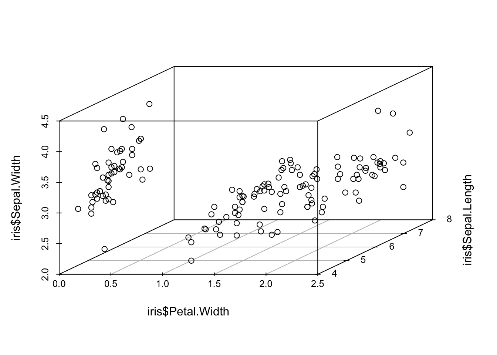
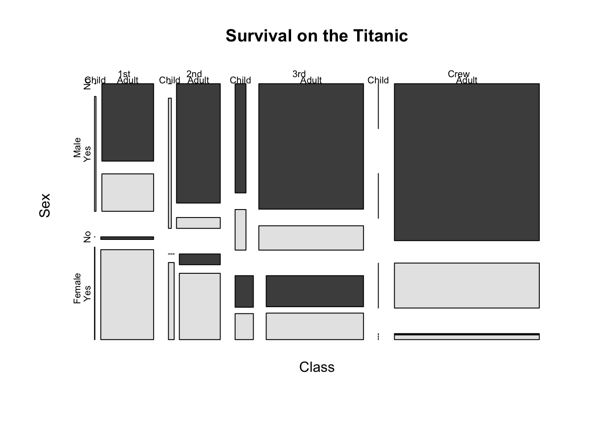

Chapter 3 Maps
地图毫无疑问是展示地理信息数据时最直观的工具，尤其是当地图和统计量结合时，其功效则会进一步加强。地理信息系统(GIS)已经成为研究空间和地理数据的热门工具，地图的应用也是屡见不鲜。地图的本质是多边形，而多边形的边界则由地理经纬度数据确定。
3.1 maps包
R中的附加包 maps 是目前比较完善的地图程序包之一，maps包中核心的函数为map()，该函数的两个主要参数为地图数据库database和地图区域region，地图数据库中包含了所有区域的经纬度数据以及相应的区域名称，在指定一个数据库和一系列区域名称之后，这些区域的地图便可由map()生成。
library(maps)
usage(map, w = 0.8)
map(
database = "world", regions = ".", exact = FALSE,
boundary = TRUE, interior = TRUE, projection = "", parameters = NULL,
orientation = NULL, fill = FALSE, col = 1, plot = TRUE,
add = FALSE, namesonly = FALSE, xlim = NULL, ylim = NULL,
wrap = FALSE, resolution = if (plot) 1 else 0, type = "l",
bg = par("bg"), mar = c(4.1, 4.1, par("mar")[3], 0.1),
border = 0.01, ...
)3.1.1 世界地图
通过运行如下代码得到世界地图。maps包里面还包括了美国、新西兰、意大利等国的地图。
library(maps)
par(family = "STKaiti")
map("world", fill = TRUE, col = topo.colors(10), ylim = c(-60, 90), mar = c(0, 0, 0, 0))
title("世界地图") # 添加标题
3.1.2 美国地图
map("state",
fill = TRUE, col = heat.colors(10),
mar = c(0, 0, 2, 0)
)
par(family = "STKaiti")
title("美国地图")
可以根据需要绘制某国地图或者美国某几个州的地图，只需在map()函数中添加选项例如region = c('new york', 'new jersey', 'penn') 即可。
map("state",
region = c("new york", "new jersey", "penn"),
fill = TRUE, col = terrain.colors(3), mar = c(2, 3, 4, 3)
)
par(family = "STKaiti")
title("美国三州地图")
3.1.3 中国地图
在国家基础地理信息中心的网站上提供了免费的GIS数据下载，里面包括了国界与省界数据，使用R的maptools包的readShapePoly()或rgdal包的readOGR()可以读取shp文件。
library(maptools)
library(rgdal)
china <- readOGR("china/bou2_4p.shp")
china@data$NAME <- iconv(china@data$NAME, "GBK", "UTF-8")该数据包含了中国925个地区的的面积、周长、编号、行政区名称等信息。
str(china@data)## 'data.frame': 925 obs. of 7 variables:
## $ AREA : num 54.4 129.1 175.6 21.3 15.6 ...
## $ PERIMETER : num 68.5 129.9 84.9 41.2 38.4 ...
## $ BOU2_4M_ : chr "2" "3" "4" "5" ...
## $ BOU2_4M_ID: chr "23" "15" "65" "22" ...
## $ ADCODE93 : int 230000 150000 650000 220000 210000 620000 130000 110000 210000 210000 ...
## $ ADCODE99 : int 230000 150000 650000 220000 210000 620000 130000 110000 210000 210000 ...
## $ NAME : chr "黑龙江省" "内蒙古自治区" "新疆维吾尔自治区" "吉林省" ...在绘制地图时，每一个省市自治区或岛屿都是用一个多边形来表示的。GIS数据提供了每一个行政区的多边形逐点的坐标，然后R通过顺次连接这些坐标，就绘制出了一个多边形区域。
plot(china)
par(family = "STKaiti")
title("中国地图")
plot命令中的col参数在本例中应该是一个长度为 925 的向量，其第 i 个分量的取值就代表了地图中第 i 个多边形的颜色。
plot(china, col = gray(924:0 / 924))
也可以通过查找相应的行政区对应的行名对col参数进行赋值，对相应地区进行着色：
getColor <- function(mapdata, provname, provcol, othercol) {
f <- function(x, y) ifelse(x %in% y, which(y == x), 0)
colIndex <- sapply(mapdata@data$NAME, f, provname)
col <- c(othercol, provcol)[colIndex + 1]
return(col)
}其中mapdata是存放地图数据的变量，provname是需要改变颜色的地区的名称，provcol是对应于provname的代表颜色的向量，othercol是其它地区的颜色。举例如下：
provname <- c("北京市", "上海市", "重庆市", "福建省")
provcol <- c("red", "green", "yellow", "purple")
plot(china, col = getColor(china, provname, provcol, "white"))
利用类似的方法就可以根据自己的需要对不同的区域进行着色。从国家统计局获取 2007 年我国各地区的人口数据，然后根据人口的多少对各省份进行着色。
data_population <- read.csv("data/population.csv")
provname <- data_population$provname
pop <- data_population$pop
provcol <- rgb(red = 1 - pop / max(pop) / 2, green = 1 - pop / max(pop) / 2, blue = 0)
plot(china, col = getColor(china, provname, provcol, "white"), xlab = "", ylab = "")
此外，还可以利用这个参数画出国内某一部分的地图，例如绘制福建、浙江、江西和广东四个东南地区省份的地图如下：
southeast <- c("福建省", "浙江省", "江西省", "广东省")
plot(china,
col = getColor(china, southeast, rep("blue", 4), "white"), border = "white",
xlab = "", ylab = ""
)
还可以人工将各省会的信息在地图上标记出来
par(mar = rep(0, 4))
par(family = "STKaiti")
dat <- read.csv("data/city.csv")
plot(china, col = "lightgray", ylim = c(18, 54), panel.first = grid())
points(dat$jd, dat$wd, pch = 19, col = rgb(0, 0, 0, 0.5), cex = 0.6)
text(dat$jd, dat$wd, dat[, 2],
cex = 0.7, col = rgb(0, 0, 0, 0.7),
pos = c(
2, 4, 4, 4, 3, 4, 2, 3, 4, 2, 4, 2, 2,
4, 3, 2, 1, 3, 1, 1, 2, 3, 2, 2, 1, 2, 4, 3, 1, 2, 2, 4, 4, 2
)
)
axis(1, lwd = 0)
axis(2, lwd = 0)
axis(3, lwd = 0)
axis(4, lwd = 0)3.2 REmap包
REmap是一个基于Echarts的R语言程序包，为使用者提供了一个简便的、可交互的地图数据可视化工具。由于REmap目前托管在GitHub上,需要使用devtools包下载。
install.packages('devtools')
library(devtools)
install_github('lchiffon/REmap')3.2.1 获取经纬度信息
REmap是基于百度地图构建的，因此需要在百度地图开放平台创建项目获取AK，配置到REmap中。
library(REmap)
options(remap.ak = "ZAIIlGEpPKoBVF5M4GLEuN6G5T6AQpCn") # 配置百度地图API
place <- c("中央财经大学学院南路校区", "中央财经大学沙河校区")
get_geo_position(place)## lon lat city
## 1 116.3492 39.96521 中央财经大学学院南路校区
## 2 116.2883 40.17780 中央财经大学沙河校区3.2.2 获取各省（市）的市（区）级行政单位名称
问：北京市究竟下辖哪几个区呢？
mapNames("北京")## [1] "密云县" "怀柔区" "房山区" "延庆县" "门头沟区" "昌平区"
## [7] "大兴区" "顺义区" "平谷区" "通州区" "朝阳区" "海淀区"
## [13] "丰台区" "石景山区" "西城区" "东城区" "宣武区" "崇文区"3.2.3 地图可视化
3.2.3.1 remap函数绘制航迹图
origin <- rep("北京", 10)
destination <- c(
"上海", "广州", "大连", "南宁", "南昌",
"拉萨", "长春", "包头", "重庆", "常州"
)
flight <- data.frame(origin, destination)
remap(flight, title = "航迹图", theme = get_theme("Dark"))图中的颜色可以通过get_theme来设置，几个常用的参数：
Theme:theme是总体配色选项，共有’Dark’,‘Bright’,‘Sky’,‘None’四种选项。选定该选项（除’None’外）后，其它参数无需再设置。
lineColor: lineColor为线条颜色，默认是随机，也可自行设置，如’red’。
BackgroundColor:地图外背景颜色
RegionColor:地图中各区域颜色
get_theme(
theme = "Dark",
lineColor = "Random",
backgroundColor = "#1b1b1b",
titleColor = "#fff",
borderColor = "rgba(100,149,237,1)",
regionColor = "#1b1b1b",
labelShow = T,
pointShow = F,
pointColor = "gold"
)例如将颜色改为亮色：
remap(flight, title = "亮色航迹图", theme = get_theme("Bright"))3.2.3.2 remapH绘制热力效果图
这个函数的特色是可以做中心辐射的热力图，这种热力图在气象、人口密度、海拔测绘领域有诸多运用，当然也可以上当用在商务场合——特别是跟地理信息有关的数据呈现方面。
remapH函数的各参数如下：
remapH(data,
maptype = 'china',
theme = get_theme("Dark"),
blurSize = 30,
color = c('blue'),
minAlpha = 0.05,
opacity = 1,
)data为要传入的数据，数据为三列，第一列为lon(经度)，第二列为lat(维度)，第三列为prob(密度/概率)
maptype为要绘制的地图类型，可选有：”china”，”world”或中国各省份名字
theme为绘制的地图主题类型，可由get_theme函数传入，get_theme在下面会详解
blurSize为热力效果的泛化范围，可调整热力点中心的扩散程度
color为热力的渐变颜色
minAlpha为热力点的展示阈值，对应data中的prob列，作图时各点密度会对比minAlpha，以凸显不同密度所展示的不同热力分布
opacity为透明度，调整热力图的透明度
绘制200个城市的PM2.5指数热力图如下：
air <- read.csv(file = "data/air.csv", header = T)
head(air)## lon lat avg_pm2_5
## 1 121.3857 41.05955 0.3618444
## 2 113.4990 22.28592 0.1763897
## 3 119.9574 36.78975 0.3056141
## 4 114.9962 30.20217 0.3327429
## 5 117.5387 36.70130 0.4373493
## 6 129.0924 47.97323 0.1041234theme1 <- get_theme(
theme = "none",
lineColor = "white",
backgroundColor = "white",
titleColor = "#fff",
borderColor = "blue",
regionColor = "grey",
labelShow = T,
pointShow = F,
pointColor = "gold"
)
remapH(air,
maptype = "china",
theme = theme1,
blurSize = 35,
color = "red",
minAlpha = 0.3,
opacity = 1,
)3.2.3.3 remapC绘制填充地图
remapC()允许我们同时在一张地图上制作填充图和点图、线图。
remapC(data,
maptype = "china",
markLineData = NULL,
markPointData = NULL,
color = c("#1e90ff", "#f0ffff"),
theme = get_theme("Bright"),
title = "",
subtitle = "",
markLineTheme = markLineControl(),
markPointTheme = markPointControl(),
geoData = NA,
mindata = NA,
maxdata = NA
)主要参数：
data为需要的原始数据框格式数据，共2列，第一列为省份或者城市名称，第二列为对应的数值，数值大小将决定地图颜色深浅。
maptype为地图类型设置，可选world、china或者中国省份名称
color为热力图渐变颜色，默认为2个颜色，第一个为终止色，第二个为初始色
mindata与maxdata可以设置颜色极端点对应数据的上下限（默认是使用data中的数据最大值最小值作为两端极值）。
province <- mapNames("china") # 全国省份
value <- rnorm(34, 100, 30) # 随机生成分省值
mydata <- data.frame(province, value) # 合成数据框作图数据
remapC(mydata,
maptype = "China", color = c("yellow", "red"),
title = "全国分省图"
) # 制作等级图模拟出广东省回流各省的人口数，使用填色地图表示人流规模，使用动态流向线表示回流最大的前10个省份。
province <- mapNames("china") # 全国省份
value <- round(rnorm(34, 1000, 30), 0) # 随机生成分省值
mydata <- data.frame(province, value) # 合并数据
lableper <- mydata[order(mydata[, "value"], decreasing = T), ][1:10, ]
origin <- rep("广州", length(lableper))
destination <- lableper$province
line_data <- data.frame(origin, destination)
remapC(mydata,
title = "广东省人口迁徙地图",
theme = get_theme("Dark"),
color = c("#CD0000", "#FFEC8B"),
markLineData = line_data,
markLineTheme = markLineControl(color = "white", lineWidth = 2, lineType = "dashed"),
markPointData = line_data[2],
markPointTheme = markPointControl(
symbolSize = 13, effect = T, effectType = "scale",
color = "white"
)